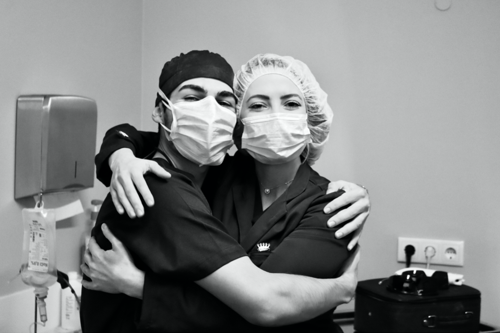

Para profissionais de saúde:
Descubra como a I-R3THERAPIES pode ajudá-lo a levar o atendimento ao paciente para o próximo nível
THE I-R3THERAPIES EXPERIÊNCIA
ALL IN ONE TERAPIA REVOLUCIONÁRIA
Regeneração dos tecidos moles

Regeneração óssea
Uma única solução de cuidados periodontais preventivos para a perda dentária e defeitos de tecido para implantes dentários
NOSSA REVOLUÇÃO / NOSSA TECNOLOGIA
Uma nova abordagem.
Uma solução personalizada versátil focando-se na prevenção, manutenção e tratamento de distúrbios / defeitos orais e maxilo-faciais, proporcionando uma reconstrução de tecido mais inteligente.

Saúde oral, reinventada..
Inovador cocktail regenerativo injetável minimamente invasivo
Matriz extracelular natural biomimética
Solução de Alginato de Estrôncio
Fatores regenerativos de membranas
fetais humanas descelularizadas
Quando implantada, a camada de biomaterial em contato com o osso oferecerá suporte estrutural, ao mesmo tempo em que fornecerá uma estrutura temporária sobre a qual um novo osso possa crescer.

Adaptação biomimética da regeneração simultânea de osso e tecido mole

Quais são os benefícios?
Profissionais
Ao usar I-R3THERAPIES, na sua prática clínica o profissional pode cuidar do seu paciente mesmo se o profissional tiver uma vida agitada e preenchida. Portanto, o profissional economizará tempo e reduzirá o stress diário. Além disso, o profissional terá mais sucesso nos seus tratamentos e surgirão novas oportunidades profissionais a serem exploradas.


Pacientes
Os pacientes poderão viver uma melhor experiência cirúrgica, independente do procedimento. Acelerando a recuperação do paciente. Aumentando a sua satisfação e atractividade.
Personalize o seu tratamento rapidamente e economize
Como especialistas, queremos recomendar as melhores opções para melhorar os seus tratamentos e técnicas cirúrgicas regenerativas. Obtenha um plano profissional e personalizado de forma confortável e rápida.O nosso compromisso - segurança. O nosso valor - eficácia. O nosso desafio - resultados. A nossa recompensa - a sua satisfação.

Rodrigo Val d’Oleiros e Silva - DMD, MDS
CEO & Fundador I-R3THERAPIES
Investigador Científico
Médico dentista com experiência em cirurgia oral e reabilitação oral, especialização em regeneração de tecidos oral e maxilo-facial. Durante o Mestrado integrado em Medicina Dentária (FMDUP) realizou diversos cursos avançados em implantologia e reabilitação oral, juntamente com um período de sua graduação na Universidade de São Paulo (FO-USP). Como investigador as suas principais áreas de interesse de investigação são os biomateriais, biologia de células-estaminais, biologia do desenvolvimento, evolução, organogénese e regeneração de tecidos. O Rodrigo possui cursos avançados em células estaminais e morfogénese pelo Instituto Curie, Paris e em organoides e modelos avançados 3D in vitro para a investigação em saúde e doenças pelo i3S (Instituto de Investigação e Inovação em Saúde). O Rodrigo é estudante de doutoramento e investigador no i3S (Instituto de Investigação e Inovação em Saúde) e INEB (Instituto Nacional de Engenharia Biomédica da Universidade do Porto), com foco na compreensão dos principais mecanismos biológicos na saúde e na doença, significativos na medicina regenerativa, na bioengenharia de órgãos, considerando a biologia do desenvolvimento, no que diz respeito à evolução das espécies, desde as células-estaminais até a morfogénese. Investigador altamente motivado e com permanente curiosidade pelo conhecimento. Excelente comunicador que mantém consistentemente altos padrões de profissionalismo e trabalha bem em diversas equipas. Em 2019, ganhou o European Innovation Academy, um programa líder na educação para o empreendedorismo tecnológico, das principais instituições do mundo; a Stanford University, U.C. Berkeley, Google e Silicon Valley. Possui formação avançada em empreendedorismo pela NOVA School of Business and Economics, Lisboa, Portugal, e do curso de Empreendedorismo e Tecnologia pelo Sutardja Center for Entrepreneurship and Technology, Berkeley Engineering, U. C. Berkeley, Califórnia, EUA. O Rodrigo trabalha como Aluno Representante da Pesquisa e Inovação da Universidade do Porto no projeto europeu - European University Alliance for Global Health.

Maria Cristina Ribeiro - PhD
Líder de projecto I-R3THERAPIES
Licenciatura em Engenharia Metalúrgica pela Faculdade de Engenharia da Universidade do Porto (FEUP), seguido do mestrado em Engenharia de Materiais (FEUP) e do Doutoramento em Engenharia de Materiais e Metalúrgica (FEUP). Investigadora do INEB desde a sua fundação (1989), atualmente no grupo Micro-ambientes para Novas Terapias, e do I3S. Vogal do Conselho de Administração do INEB (desde dezembro de 2012) e atual Presidente, professora adjunta da Escola Superior de Engenharia-Instituto Politécnico do Porto (ISEP), Diretora do curso de Licenciatura em Engenharia Informática e Instrumentação Médica do ISEP (desde Junho de 2007), e membro efetivo do Conselho Pedagógico do ISEP (desde julho de 2014) e Diretora do curso de Engenharia Biomédica do ISEP (desde setembro de 2016). As principais áreas de pesquisa são os biomateriais, com foco nos sistemas injetáveis para a regeneração óssea, materiais biomiméticos e técnicas de espectroscopia vibracional. O trabalho da Cristina também é dedicado à bioengenharia de biomateriais inspirados em matrizes que modulam a resposta inflamatória, incluindo matrizes e nanocomplexos projetados hierarquicamente para regeneração de tecidos e do cancro. A equipe também explora o crosstalk entre as células do sistema imunológico e outras células do tecido no contexto das interações célula / biomaterial. Participou de vários projetos de investigação, dois como líder, tem inúmeras publicações na área da ciência dos biomateriais e orientou vários trabalhos científicos.

Joana Caldeira - PhD
Investigadora Científica I-R3THERAPIES
Em 2005, Joana Caldeira licenciou-se em Microbiologia na Escola Superior de Biotecnologia da Universidade Católica Portuguesa e em 2011 obteve o seu doutoramento em Biomedicina (Faculdade de Medicina da Universidade do Porto). Depois de terminar a universidade, foi para o Centro Andaluz de Biologia del Desarrollo (Sevilha, Espanha), onde trabalhou como assistente de pesquisa por quase um ano. Lá iniciou sua tese de doutoramento, em uma colaboração entre o laboratório Dr. Fernando Casares e a Dra. Raquel Seruca. Nesse período, o foco principal de Joanas foi a oncobiologia, usando a Drosophila como modelo animal para estudar novos genes envolvidos no câncer gástrico. Em 2012, ingressou no INEB numa colaboração entre o Prof. Mário Barbosa e a sua ex-orientadora Dra. Raquel Seruca. Desde então, ela tem se interessado em entender o papel da matriz extracelular (tanto no cancro quanto na regeneração) e explorar a forma como ela pode ser manipulada para recapitular estágios iniciais de desenvolvimento, melhorando as terapias regenerativas atuais, ou seja, da doença do disco intervertebral. Em 2018 Joana recebeu financiamento da EUROSPINE e foi premiada com a Medalha de Honra L'Oréal Portugal para Mulheres na Ciência 2018. Para além de orientar teses de mestrado e doutoramento nacionais e internacionais, participou em várias iniciativas de comunicação científica, quer como mentora, coordenadora de projetos ou colaborador. Atualmente, Joana é também presidente da Equipe de Captação de Recursos do i3S.
Cláudia Ribeiro Machado - MSc
Investigaro Científica I-R3THERAPIES
Cláudia licenciou-se em Anatomia Patológica, Citológica e Tanatológica, pela Escola superior de Saúde, do Instituto Politécnico do Porto (2015). Durante este período, inscreveu-se em vários estágios curriculares em ambiente hospitalar (CHSJ, HPH, CHUC), adquirindo competências em histologia, anatomia humana, biologia molecular e patologia. Em 2019 obteve o grau de Mestre em Bioestatística e Bioinformática aplicada à Saúde, onde fez a sua dissertação de mestrado no perfil proteómico da resposta celular de biomateriais, para regeneração do tecido periodontal, sob a orientação da Doutora Cristina Ribeiro e da Doutora Joana Caldeira na i3S . Adquiriu competências em bioimagem e análise e estatística bioinformática. Desde 2016 é Técnica de Pesquisa no INEB / i3S.
Notícias e Comunicações
MANTENHA-SE ATUALIZADO COM AS NOSSAS MAIS RECENTES NOVIDADES
Entre em contacto